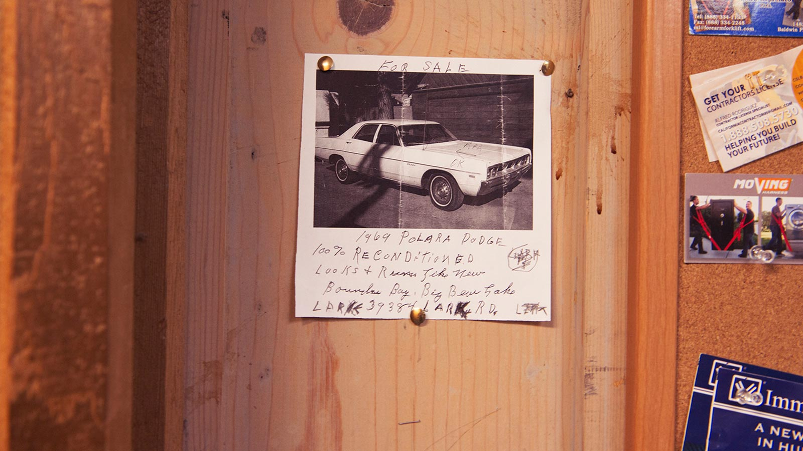

-

Antworten auf Fragen,
die alle stellen...
SERVICES
- BF17
-
Begleitetes Fahren – Accompanied Driving: For a young driver who must be in the company of an experienced driver who is at least 30 years of age and has been in possession of a valid B-license for not less than 5 years. The model aims at curbing cases of accidents among young drivers. The young driver gets a B-license on attaining the legal age.
- A – Full Standard
-
For drivers aged 25 years and above who ride motorcycles that either have or lack sidecar. The motorcycles have power of more than 25 kW (34 PS) or curb weight less than 6.25 kg per kW. Categories covered: A restricted, A1, M
- A Restricted
-
For motorcycles that either have or lack sidecar and with maximum power of 25 kW/ 34 PS. The curb weight has to be 6.25 kg per kW. The rider advances to Full Standard without any additional test after a riding experience of two years. Categories covered: A1, M Qualification: 18 years
- A1
-
For small motorcycles with up to 125 cm³ cubic capacity and power up to 11 kW. Unless 18 years and above, holders in this category are limited to light motorcycles whose maximum speeds are up to 80 km/h. Category covered: M
Qualification: 16 years
- Mofa
-
For motor-assisted one-seat bicycles which have maximum speeds of 25 Km/h and maximum weight of 30Kg when empty.
Qualification: 15 years
- M
-
For light motorcycles and bicycles (moped and mokick) whose speeds are limited to 45 km/h and have maximum cubic capacity of 50 cm³. The maximum secondary engine is 50 cm³
Minimum age: 16 years
- S
-
For tricycles and quadricycles with up to 45 km/h speeds. Quadricycles’ curb weight should be 550 kg or less, which independent from the battery mass. The curb weight of electrically propelled vehicles shall not take account of the battery mass. For those with spark ignition engine such as gas-fuel engine, the maximum cubic capacity is 50 cm³.
Qualification: 16 years
- B
-
For vehicles with a Maximum Authorized Mass (MAM) of 3500 kilograms or less and Trailers not exceeding 750 kg MAM or Trailers with more than 750 kg MAM, where the MAM of the combination is up to 3,500 kg and the MAM of the trailer is less than the curb weight of the tractor vehicle. Qualification: 18 years (17 years for accompanied drivers/BF17) Categories covered: M, L, S
- BE
-
For vehicles such as tractor vehicles which are classified in category B and trailers that are not categorized in B. The Maximum Authorized Mass (MAM) is 3500 kilograms and also covers:
Trailers 750 kg MAM or less, where the MAM is more than the curb weight of the tractor vehicle
Trailer more than 750 kg MAM, where the MAM of the combination is more than 3,500 kilograms and the MAM of the trailer is less than the curb weight of the tractor vehicle.
Those previously in possession of category 3 driving licenses may use their vehicles to pull all single-axle trailers, including those with twin axles.
Qualification: 18 years (17 years for accompanied drivers/BF17). Driving license category B will be required
- C
-
Fr motor vehicles with Maximum Authorized Mass (MAM) in excess of 3,500 kg (no upper limit), and trailers MAM not exceeding 750 kg
Qualification: 18 years. For goods vehicles, the operator must be at least 21 years of age if the MAM of the tractor vehicle or the trailer plus the MAM tractor vehicle exceeds 7,500 kg. Driving license category B required Category covered: C1
- CE
-
The category consists of articulated lorries and tractor trailers. For motor vehicles that have more than 3,500 kg (no upper limit) Maximum Authorized Mass (MAM). Also caters for trailers with MAM of more than 750 kg.
Qualification: 18 years. For goods vehicles, the operator must be at least 21 years if the MAM of the tractor vehicle or the trailer plus the MAM of the tractor vehicle exceeds 7,500 kg. Driving license category C required Categories covered: C1E, BE, T, if possessing D1: D1E, if possessing D: DE
- C1
-
For motor vehicles with Maximum Authorized Mass (MAM) of over 3,500 kg but less than 7,500 kg. May be combined with a trailer whose MAM is less than 750 kilograms.
Qualification: 18 years. For goods vehicles, the operator must be at least 21 years if the MAM of the tractor vehicle or the trailer plus the MAM of the tractor vehicle exceeds 7500 kg. Driving license B required
- C1E
-
For combination of driving license category C1 and trailer with Maximum Authorized Mass (MAM) of up to 12,000 kilograms. Also covers motor vehicles with MAM of between 3,500 kg and 7,500 kg combined with a trailer of over 750 kg MAM. The MAM of the trailer must not surpass the mass of the tractor vehicle when empty and the total MAM of the combination must not be in excess of 12 000 kg.
Qualification: 18 years. For goods vehicles, the operator must be at least 21 years if the MAM of the tractor vehicle or the trailer plus the MAM of the tractor vehicle is more than 7,500 kg. Driving license category C1 required Categories covered: BE, if in possession of D1: D1E
- D
-
For 16-seater buses and trailers with up to 750 kg Maximum Authorized Mass (MAM). Qualification: 21 years. Driving license category B required Category covered: D1
- DE
-
For 16-seater buses and trailers with more than 750 kg in Maximum Authorized Mass (MAM). Qualification: 21 years. Driving license category D required Categories covered: D1E, BE, if possessing C1: C1E
- D1
-
Fo buses of between 8 to 16 seats and trailers with up to 750 kg Maximum Authorised Mass (MAM).
Qualification: 21 years. Driving license category B required
- D1E
-
For combination of driving license category D1, trailer not exceeding 12 000 kg Maximum Authorized Mass (MAM) and buses of between 8 to 16 seats, including trailers with MAM of over 750 kg.
Qualification: 21 years. Driving license category D1 required Categories covered: BE, if possessing C1 first: C1E
- L
-
For agricultural and plantation tractors with speeds of up to 32 km/h, and trailers whose speeds in this case do not exceed 25 km/h. Also covers industrial trucks and heavy trailers and work machinery whose speed limit is 25 km/h
Qualification: 16 years
- T
-
For agricultural and plantation tractors as well as trailers with maximum speeds of between 32 km/h and 60 km/h. Also covers trailers and heavy work machinery for agriculture and plantations with maximum speeds of 40 km/h.
Qualification: 16 years. On attaining 18, the driver qualifies for tractors with speeds of up to 40 km/h Categories covered: L, M, S